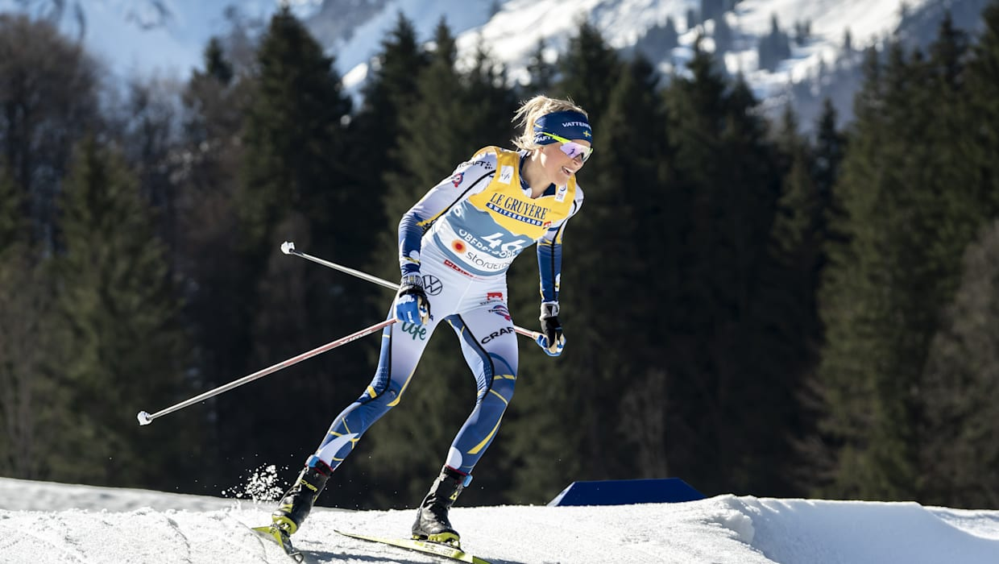
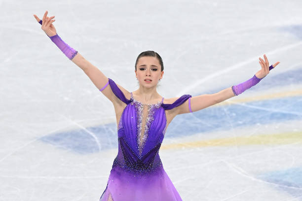
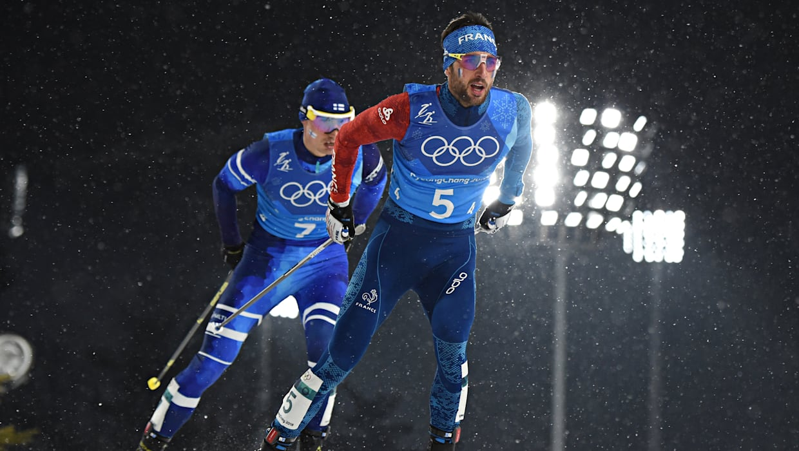
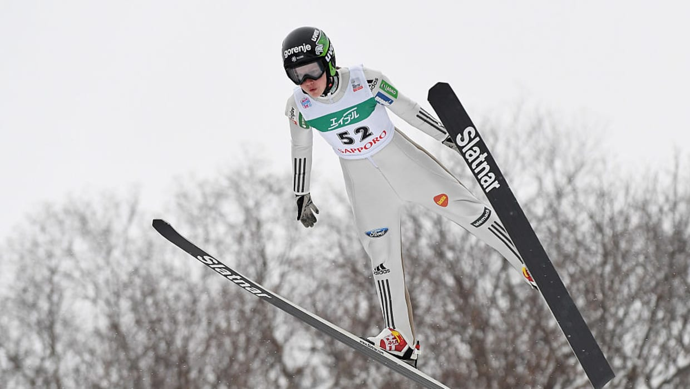

Five most popular events in Beijing 2022 Winter Olympic Games.
The combination of athleticism and spectacle!
Cross-Country Skiing
is a form of skiing where skiers rely on their own locomotion to move across snow-covered terrain, rather than using ski lifts or other forms of assistance. Cross-country skiing is widely practiced as a sport and recreational activity; however, some still use it as a means of transportation. Variants of cross-country skiing are adapted to a range of terrain which spans unimproved, sometimes mountainous terrain to groomed courses that are specifically designed for the sport.


Figure skating
is a sport in which individuals, pairs, or groups perform on figure skates on ice. It was the first winter sport to be included in the Olympic Games.The Olympic disciplines are men's singles, women's singles[note 1], pair skating, and ice dance; the four individual disciplines are also combined into a team event, first included in the Winter Olympics in 2014. The non-Olympic disciplines include synchronized skating, Theater on Ice, and four skating. From intermediate through senior-level competition, skaters generally perform two programs (the short program and the free skate), which, depending on the discipline, may include spins, jumps, moves in the field, lifts, throw jumps, death spirals, and other elements or moves.
Nordic combined
is a winter sport in which athletes compete in cross-country skiing and ski jumping. The Nordic combined at the Winter Olympics has been held since the first ever Winter Olympics in 1924, while the FIS Nordic Combined World Cup has been held since 1983. Many Nordic combined competitions use the Gundersen method, where placement in the ski jumping segment results in time (dis)advantages added to the contestant's total in the cross-country skiing segment (e.g. the ski jumping winner starts the cross-country skiing race at 00:00:00 while the one with the lowest jumping score starts with the longest time penalty).

Ice hockey
is a contact winter team sport played on ice skates, usually on an ice skating rink with lines and markings specific to the sport. In ice hockey, two opposing teams use ice hockey sticks to control, advance and shoot a closed, vulcanized, rubber disc called a "puck" into the other team's goal. Each goal is worth one point. The team which scores the most goals is declared the winner. In a formal game, each team has six skaters on the ice at a time, barring any penalties, one of whom is the goaltender.
Ice hockey is one of the sports featured in the Winter Olympics while its premiere international amateur competition, the IIHF World Championships, are governed by the International Ice Hockey Federation (IIHF) for both men's and women's competitions. Ice hockey is also played as a professional sport.
Ski jumping
is a winter sport in which competitors aim to achieve the farthest jump after sliding down on their skis from a specially designed curved ramp. Along with jump length, competitor's aerial style and other factors also affect the final score. Ski jumping was first contested in Norway in the late 19th century, and later spread through Europe and North America in the early 20th century. Along with cross-country skiing, it constitutes the traditional group of Nordic skiing disciplines.[1]
The ski jumping venue, commonly referred to as a hill, consists of the jumping ramp (in-run), take-off table, and a landing hill. Each jump is evaluated according to the distance traveled and the style performed. The distance score is related to the construction point (also known as the K-point), which is a line drawn in the landing area and serves as a "target" for the competitors to reach.[2
